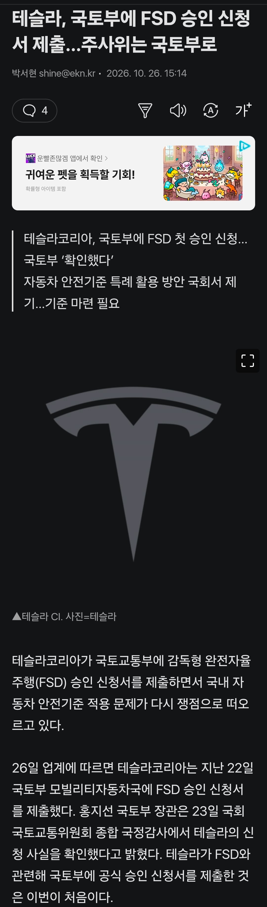
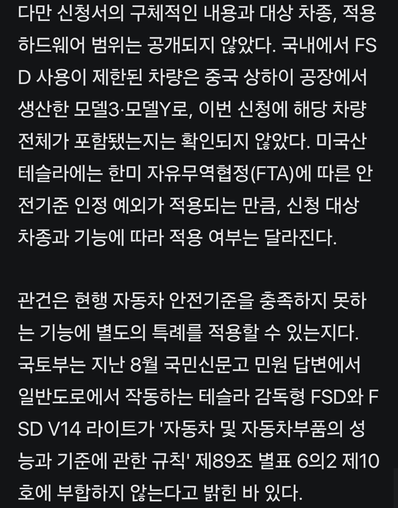
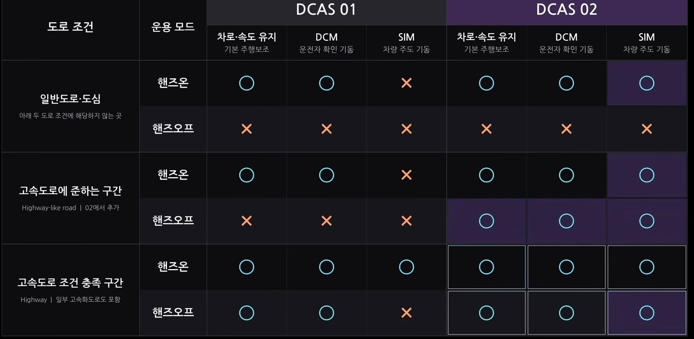

언플만 존나하다가 이제야 신청함.
관건은 우리나라는 국제표준인 DCAS를 도입하려고 하는데
아직 도입이 안되었고 도입되더라도 테슬라는 국제표준인 DCAS에도 안맞음.
(저 dcas 표에다가 전부다 동그라미를 치면 FSD)
결국 가능한건 예외승인이란건데
예외승인이라는게 일종의 특혜라
현기같은 국익에 도움이 되는
국내기업도 아닌
테슬라에게 주는게 가능하지는 않다는게 중론이지만
국감장에서 국회의원들이 왜 신청안했냐고 호통 몇번 쳐주니까
'저 양반들이 우리편 들어줄려나?' 하고 신청하는 모양
거기에 거부하면 현토부라고 존나 욕쳐먹을거라 국토부입장에선 겁나 애매함.
솔직히 진짜 쓰고 싶음. 근데 이런 인간이 나 말고도 많을거라 아마 통과 안시켜줄 것 같음